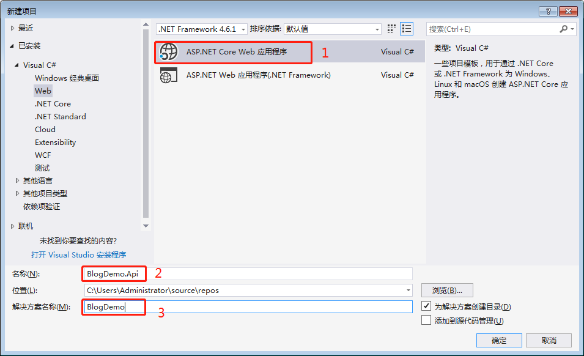
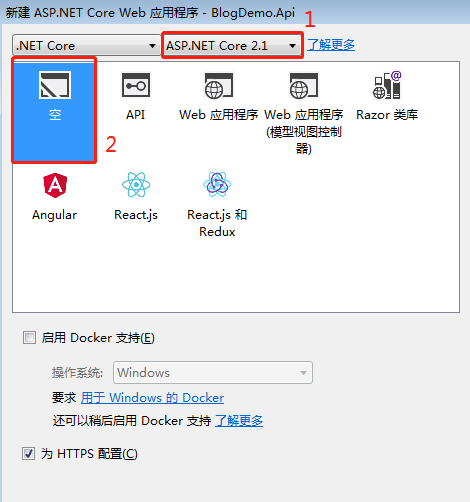
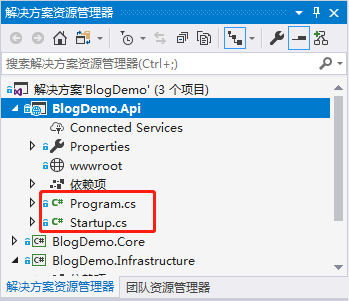
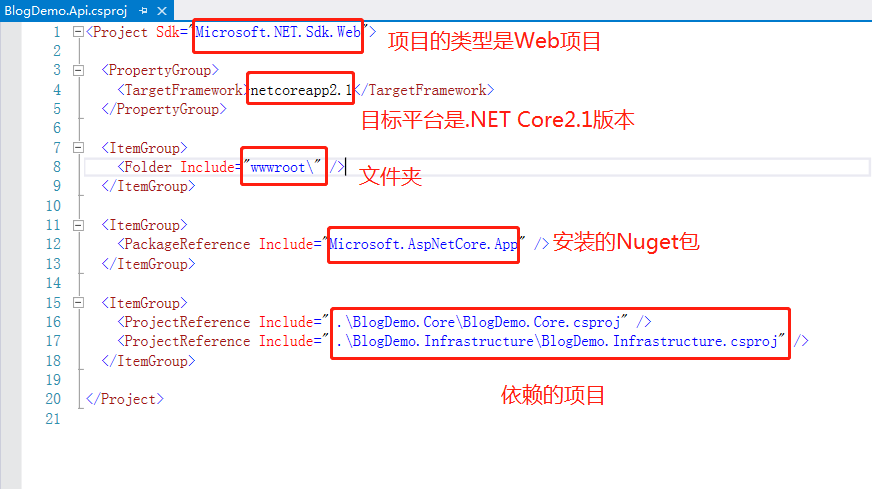
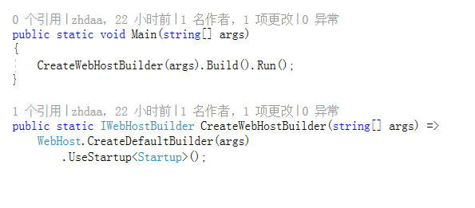
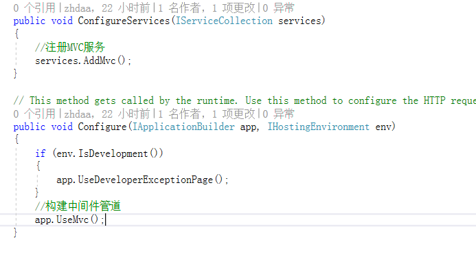
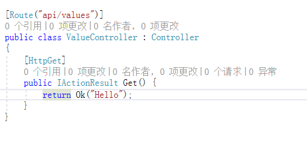
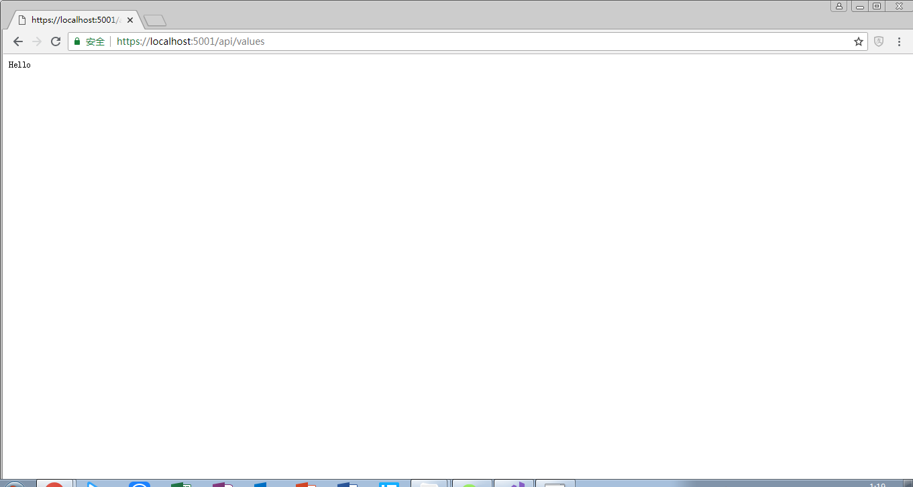

介绍
今天开始学习ASP.NET Core。作为.NET平台的初级搬砖，很想找个机会学习.NET Core的相关知识。今天找到一套视频教程，是ASP.NET Core Web API + Identity Server 4 + Angular 6 + Angular Material 小项目实战。希望通过这个项目的学习能够有所收获。PS：相关教程来自博客园博主草根专栏。
项目实战分为4个部分：
- ASP.NET Core Web API 项目搭建
- Angular 6 客户端项目搭建
- Identity Server 4 项目搭建
- 开发，优化功能
开发工具：Visual Studio 2017
建立ASP.NET core 项目
新建项目
第一步，新建项目，ASP.NET Core Web 应用程序。项目名称改为BlogDemo.Api，解决方案名称改为BlogDemo。

选择.NET Core的版本为最新的2.1版本，然后模板是Empty。

新建项目，选择.NET Core类库，分别添加BlogDemo.Core和BlogDemo.Infrastructure。 然后添加项目之间的依赖关系。
- BlogDemo.Infrastructure依赖于BlogDemo.Core。
- BlogDemo.Api依赖于BlogDemo.Core和BlogDemo.Infrastructure。
我们可以看到解决方案上，三个项目的目录结构以及它们之间的依赖关系。

ASP.NET core Web API 解决方案结构
- BlogDemo.Core，项目的核心，包括接口，Model，域模型。
- BlogDemo.Infrastructure，基础设施，包括数据库，DbContext。
- BlogDemo.Api，包括Controller和API。
.csproj项目文件
右键项目名BlogDemo.Api，选择编辑BlogDemo.Api.csproj，即可以查看并编辑项目文件。

- .csproj项目文件包含了.NET工具构建项目所需的细节信息。如：
- 定义了项目的类型：Web，Console，Library等。
- 定义了项目的目标平台：.NET Core，.NET Framework，Mono等。
- 列出了项目依赖于哪些Nuget包。
Program 和 Startup
Program.cs和Startup是在运行时配置Web应用的启动和配置。
Program.cs
- Program进行基础设施的配置，在项目中很少发生变化：
- Http Server
- 集成IIS
- 配置信息来源

代码分析：
- 首先WebHost类调用CreateDefaultBuilder方法返回一个IWebHostBuilder实例。
- 然后IWebHostBuilder再使用UseStartup来进行配置。
- 配置完之后IWebHostBuilder实例调用Build方法，返回IWebHost实例，然后通过Run方法运行Web宿主。
Program.cs - 构建Web宿主
- Main方法，和Console项目一样。
- 构建和运行IWebHost实例。
- IWebHost是ASP.NET Core应用的核心，包括配置和Kestrel。
Startup.cs
Startup配置自定义行为，可能经常发生变化：
- 组建，服务，功能
- 中间件管道

代码分析：
- ConfigureServices方法用来进行服务注册。
- Configure方法用于配置中间件管道，如何处理请求和返回响应。并且在ConfigureServices中注册的服务可以在Configure中调用。
- Configure方法中的IApplicationBuilder类是用来构建中间件管道的。
- IHostingEnvironment类型env参数是环境变量的参数。
- Configure配置中间件管道的顺序。Request>中间件1>中间件2>中间件3>中间件2>中间件1>Response。
Startup - 配置自定义行为
- 服务注册：应用中的所有类进行注册，以便在运行时能够正确的初始化。
- 中间件和MVC：定义如何处理请求，并返回相应的响应。
添加控制器
在BlogDemo.Api项目中添加文件夹Controllers，并添加控制器ValueController，输入如下代码。

启动项目BlogDemo.Api，输入api/values，即可看到结果。
